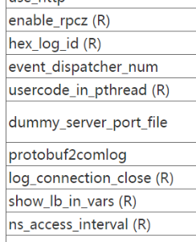
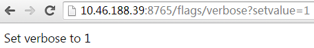
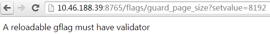
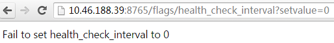
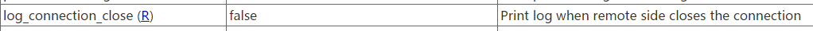
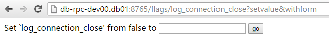
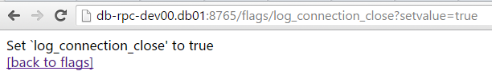
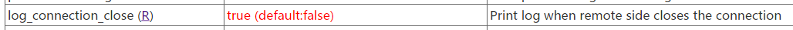

brpc 使用 gflags 管理配置。如果你的程序也使用 gflags，那么你应该已经可以修改和 brpc 相关的 flags，你可以浏览 flags 服务了解每个 flag 的具体功能。如果你的程序还没有使用 gflags，我们建议你使用，原因如下：
- 命令行和文件均可传入，前者方便做测试，后者适合线上运维。放在文件中的 gflags 可以 reload。而 configure 只支持从文件读取配置。
- 你可以在浏览器中查看 brpc 服务器中所有 gflags，并对其动态修改（如果允许的话）。configure 不可能做到这点。
- gflags 分散在和其作用紧密关联的文件中，更好管理。而使用 configure 需要聚集到一个庞大的读取函数中。
使用 gflags
gflags 一般定义在需要它的源文件中。#include <gflags/gflags.h> 后在全局 scope 加入 DEFINE_*<type>*(*<name>*, *<default-value>*, *<description>*)，比如：
#include <gflags/gflags.h>
...
DEFINE_bool(hex_log_id, false, "Show log_id in hexadecimal");
DEFINE_int32(health_check_interval, 3, "seconds between consecutive health-checkings");一般在 main 函数开头用 ParseCommandLineFlags 处理程序参数：
#include <gflags/gflags.h>
...
int main(int argc, char* argv[]) {
google::ParseCommandLineFlags(&argc, &argv, true/*表示把识别的参数从argc/argv中删除*/);
...
}如果要从 conf/gflags.conf 中加载 gflags，则可以加上参数 -flagfile=conf/gflags.conf。如果希望默认（什么参数都不加）就从文件中读取，则可以在程序中直接给 flagfile 赋值，一般这么写：
google::SetCommandLineOption("flagfile", "conf/gflags.conf");程序启动时会检查 conf/gflags.conf 是否存在，如果不存在则会报错：
$ ./my_program
conf/gflags.conf: No such file or directory更具体的使用指南请阅读 gflags 官方文档。
flagfile 的语法差异
在命令行中参数和值之间可不加等号，而在 flagfile 中一定要加。比如 ./myapp -param 7 是 ok 的，但在 ./myapp -flagfile=./gflags.conf 对应的 gflags.conf 中一定要写成 -param=7 或 --param=7，否则就不正确且不会报错。
在命令行中字符串可用单引号或双引号包围，而在 flagfile 中不能加。比如 ./myapp -name="tom" 或 ./myapp -name='tom' 都是 ok 的，但在 ./myapp -flagfile=./gflags.conf 对应的 gflags.conf 中一定要写成 -name=tom 或 --name=tom，如果写成 -name=”tom” 的话，引号也会作为值的一部分。配置文件中的值可以有空格，比如 gflags.conf 中写成 -name=value with spaces 是 ok 的，参数 name 的值就是 value with spaces，而在命令行中要用引号括起来。
flagfile 中参数可由单横线（如 -foo）或双横线（如 –foo）打头，但不能以三横线或更多横线打头，否则的话是无效参数且不会报错！
flagfile 中以 # 开头的行被认为是注释。开头的空格和空白行都会被忽略。
flagfile 中可以使用 --flagfile 包含另一个 flagfile。
在线修改 gflag
flags 服务可以查看服务器进程中所有的 gflags。修改过的 flags 会以红色高亮。”修改过”指的是修改这一行为，即使再改回默认值，仍然会显示为红色。
/flags：列出所有的 gflags。/flags/NAME：查询名字为 NAME 的 gflag。/flags/NAME1,NAME2,NAME3：查询名字为 NAME1 或 NAME2 或 NAME3 的 gflag。/flags/foo*,b$r：查询名字与某一统配符匹配的 gflag，注意用 $ 代替 ? 匹配单个字符，因为 ? 在 url 中有特殊含义。
访问 /flags/NAME?setvalue=VALUE 即可动态修改一个 gflag 的值，validator 会被调用。为了防止误修改，需要动态修改的 gflag 必须有 validator，显示此类 gflag 名字时有 (R) 后缀。

修改成功后会显示如下信息：

尝试修改不允许修改的 gflag 会显示如下错误信息：

设置一个不允许的值会显示如下错误（flag 值不会变化）：

r31658 之后支持可视化地修改，在浏览器上访问时将看到 (R) 下多了下划线：

点击后在一个独立页面可视化地修改对应的 flag：

填入 true 后确定：

返回 /flags 可以看到对应的 flag 已经被修改了：

重载 gflags 的注意事项
关于重载 gflags，重点关注：
- 避免在一段代码中多次调用同一个 gflag，应把该 gflag 的值保存下来并调用该值。因为 gflag 的值随时可能变化，而产生意想不到的结果。
- 使用
google::GetCommandLineOption()访问 string 类型的 gflag，直接访问是线程不安全的。 - 处理逻辑和副作用应放到 validator 里去。比如修改
FLAGS_foo后得更新另一处的值，如果只是写在程序初始化的地方，而不是 validator 里，那么重载时这段逻辑就运行不到了。
如果你确认某个 gflag 不需要额外的线程同步和处理逻辑就可以重载，那么可以用如下方式为其注册一个总是返回 true 的 validator：
DEFINE_bool(hex_log_id, false, "Show log_id in hexadecimal");
BAIDU_RPC_VALIDATE_GFLAG(hex_log_id, brpc::PassValidate/*always true*/);这个 flag 是单纯的开关，修改后不需要更新其他数据（没有处理逻辑），代码中前面看到 true 后面看到 false 也不会产生什么后果（不需要线程同步），所以我们让其默认可重载。
对于 int32 和 int64 类型，有一个判断是否为正数的常用 validator：
DEFINE_int32(health_check_interval, 3, "seconds between consecutive health-checkings");
BAIDU_RPC_VALIDATE_GFLAG(health_check_interval, brpc::PositiveInteger);以上操作都可以在命令行中进行：
$ curl brpc.baidu.com:8765/flags/health_check_interval
Name | Value | Description | Defined At
---------------------------------------
health_check_interval (R) | 3 | seconds between consecutive health-checkings | src/brpc/socket_map.cpp禁止动态修改
1.0.251.32399 后增加了 -immutable_flags，打开后所有的 gflags 将不能被动态修改。当一个服务对某个 gflag 值比较敏感且不希望在线上被误改，可打开这个开关。打开这个开关的同时也意味着你无法动态修改线上的配置，每次修改都要重启程序，对于还在调试阶段或待收敛阶段的程序不建议打开。